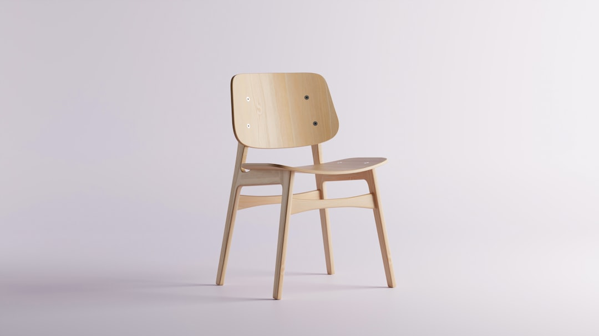
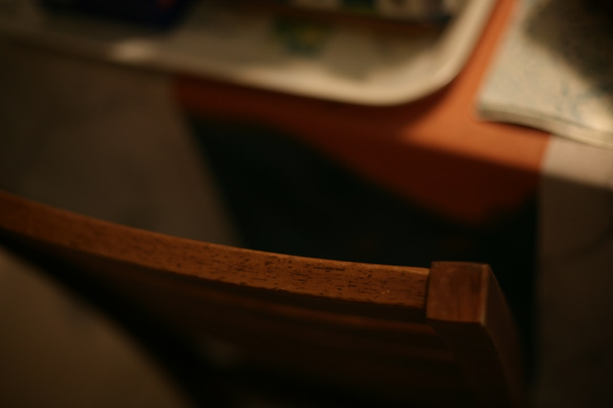

04 — The Collection
Hiroshima
Side Chair · Design — Naoto Fukasawa

군더더기 없는 실루엣. 어느 공간에 두어도 조용히 어울리는, 일상의 도구.
Hiroshima 사이드 체어는 암체어의 곡선을 가장 절제된 형태로 압축한 의자입니다. 팔걸이를 덜어내자 등받이에서 다리로 이어지는 선이 더 선명하게 드러나고, 그 단순함이 오히려 어떤 공간에도 스며들게 합니다. 식탁 앞에서도, 책상 곁에서도, 현관의 한 자리에서도 튀지 않고 제 몫을 합니다. 등받이의 미세한 곡률은 여전히 5축 CNC와 장인의 손을 거쳐 다듬어져, 오래 앉아도 등을 부드럽게 받칩니다. 덜어냄이 완성이 되는 지점 — Hiroshima가 지향하는 절제의 미학입니다.
Specification
- 디자이너
- Naoto Fukasawa
- 타입
- 사이드 체어 (Side Chair)
- 프레임
- 오크 · 월넛 · 비치 · 메이플 솔리드 우드
- 가공
- 5축 CNC + 장인 손마감 · 미세 곡률 등받이
- 컬렉션
- Hiroshima, since 2008 — 절제된 형태


Own a Maruni